The sections of this project:
Java source code:

 package
kp
package
kp
Action:

 1. With batch file
'01 MVN clean install exec.bat'
build and start the
'Application'.
1. With batch file
'01 MVN clean install exec.bat'
build and start the
'Application'.
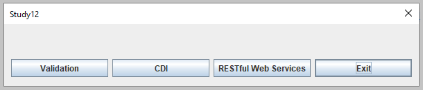
Action:
1. Push the button "Validation".
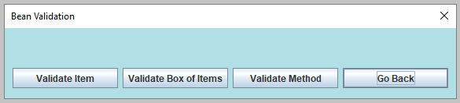
 2.1. Validation Example "Validate Item"
2.1. Validation Example "Validate Item"Action:
1. Push the button "Validate Item".
2.1.1. The interface 'ItemCons'
has the property-level constraint with pattern '.*Ret'.
The constraint is placed on the
'ItemCons::getVal' method.
2.1.2. This interface has two implementations:
'ItemConsImplNoCons' and
'ItemConsImplCons'.
Both implementations inherit the constraint from the
'ItemCons' interface.
2.1.3. In the method
'ResearchValidation::validateItem'
four values were validated with 'jakarta.validation.Validator'.
These values are presented on the tab "Validated Values".
Each value was set in a loop on new instances:
'ItemConsImplNoCons' and
'ItemConsImplCons'.
2.1.4. From the results, it is evident which constraints were active in the validation process.
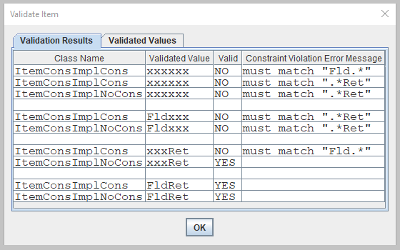
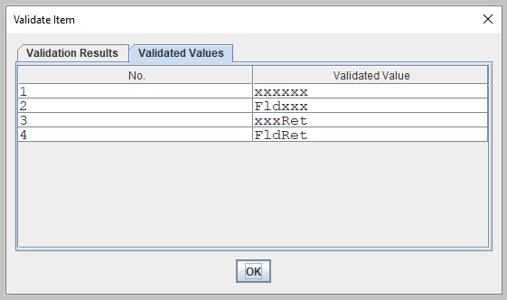
2.2. Validation Example "Validate Box Of Items"Action:
1. Push the button "Validate Box Of Items".
2.2.1. The class 'BoxCons' has these constraints:
2.2.2. In the method 'ResearchValidation::validateBoxOfItems' two validations were executed.
2.2.3. In the first validation, there were 2 constraint violations:
"not null" for 'list' equals null and "min value 10" for 'decimal' equal 1.
2.2.4. In the second validation, there were 4 constraint violations for 'list'.
That list contains 4
'ItemConsImplCons'
objects with values presented on the tab "Validated Values".
The results of that list validation are similar to the results presented in the example "Validate Item" above.
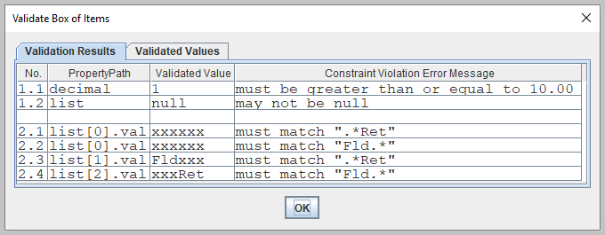
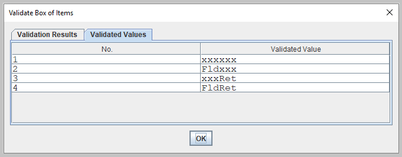
2.3. Validation Example "Validate Method"Action:
1. Push the button "Validate Method".
2.3.1. The interface 'OperatorCons' has two constraints on method 'OperatorCons::process':
2.3.2. In the method 'ResearchValidation::validateOperatorMethod' four validations were executed:
2.3.3. In the 'method parameters' validation there was a 'parameter constraint' violation:
"min value 2" for parameter equal 1.
2.3.4. In the 'method return value' validation there was a 'return value constraint' violation:
"max value 1" for return value equals 2.
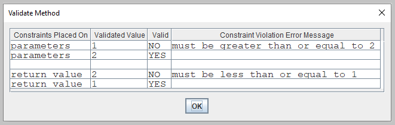
Action:
1. Push the button "CDI".
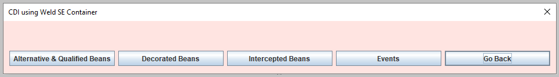
3.1. CDI Example "Alternative & Qualified Beans"Action:
1. Push the button "Alternative & Qualified Beans".
3.1.1. The interface 'BasicBean' has three implementations:
3.1.2. The alternative bean
'BasicBeanImplAlt'
is enabled in the bean archive descriptor
'beans.xml'.
The alternative bean is tested with the method
'
ResearchCDIBean::alternativeAndQualifiedBeans'.
3.1.3. The method 'BasicBeanImplScript::show' replaces the alphabetic characters with the Unicode script characters.
3.1.4. Here are used the two instances of the 'BasicBeanImplScript' bean:
3.1.5. In the 'ResearchCDIBean' three 'foreseeable' strings were injected with the '@Foreseeable' qualifier:
3.1.6. The method 'ResearchCDIBean::note' presents those three 'foreseeable' objects.
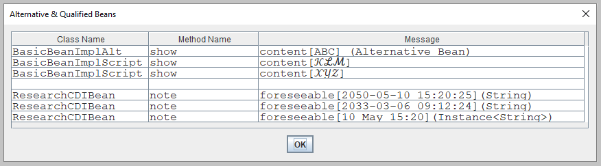
3.1.7. The same push button action was repeated with the alternative bean switched off in the file
'beans.xml'.
The result is the replacement of the bean
'BasicBeanImplAlt'
with the bean
'BasicBeanImpl'.
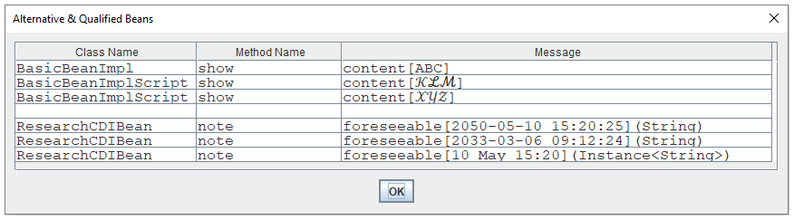
3.2. CDI Example "Decorated Beans"Action:
1. Push the button "Decorated Beans".
3.2.1. The interface 'PlainBean' has two implementations:
3.2.2. The decorated bean
'DecoratedBeanImpl'
is enabled in the bean archive descriptor
'beans.xml'.
The decorated bean is tested with the method
'ResearchCDIBean::decoratedBeans'.
3.2.3. The method 'DecoratedBeanImpl::show' calls the method 'PlainBeanImpl::show' two times:
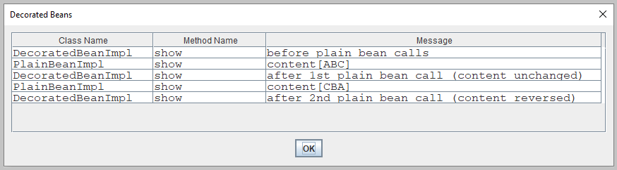
3.2.4. The same button action was repeated with the decorated bean switched off in the file
'beans.xml'.
In the results, there is only one single call to the
'PlainBeanImpl::show' method.
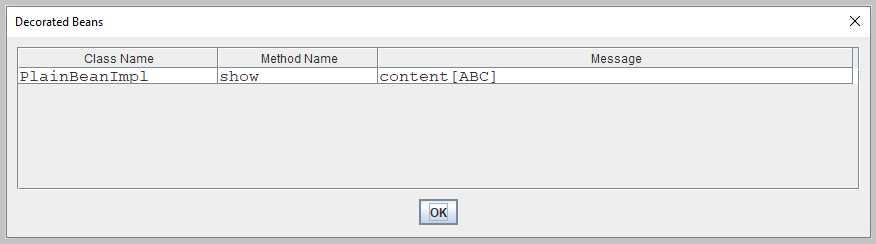
3.3. CDI Example "Intercepted Beans"Action:
1. Push the button "Intercepted Beans".
3.3.1. The interceptor class
'ElapsedInterceptor'
is enabled in the bean archive descriptor
'beans.xml'.
The intercepted bean is tested with the method
'ResearchCDIBean::interceptedBeans'.
3.3.2. The interceptor computes in the method
'
ElapsedInterceptor::measure' the method's execution.
The measured bean 'ElapsedBean'
has four methods:
3.3.3. Those four methods were executed in a sequence ten times. The results show that measuring elapsed time with an interceptor was correct only for the 'pausedMilli' method.
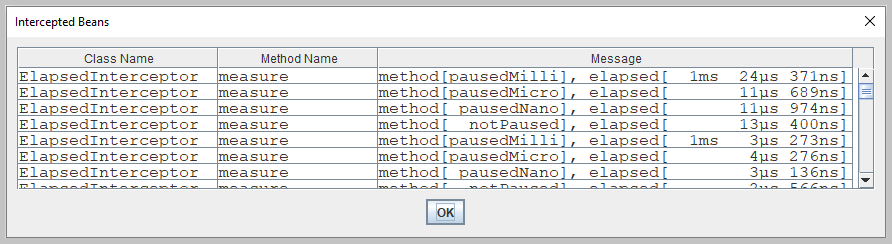
3.4. CDI Example "Events"The CDI advantage: no type erasure for the event type.
Action:
1. Push the button "Events".
3.4.1. The events were tested with the method
'ResearchCDIBean::fireEvents'.
Three types of events were fired:
3.4.2. The abstract class
'BasicObserver'
has the method
'BasicObserver::showPayload'.
There are two implementations of the
'BasicObserver' class:
'SmallObserver' and
'BigObserver'.
3.4.3. The 'SmallObserver' class observes only the 'Payload' event in the parent class method 'BasicObserver::showPayload'.
3.4.4. The 'BigObserver' class observes all three events:
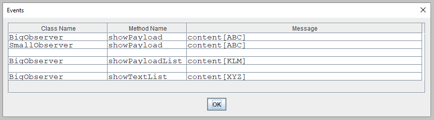
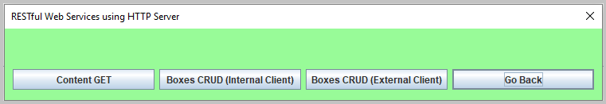
4.1. RESTful Example "Content GET"Action:
1. Push the button "Content GET".
4.1.1 The method 'ResearchRestful::process'
4.1.2 The
'ContentClient'
gets the content from the root resource
Content' using path and query parameters.
The method
'ContentClient::process'
sends two HTTP requests:
4.1.3. The 'Content' has two methods with the resource method designator annotation '@GET':
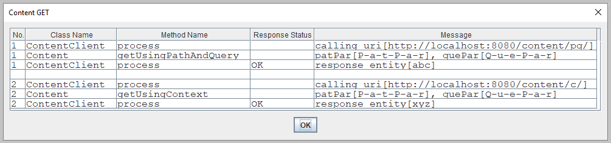
4.2. RESTful Example "Boxes CRUD (Internal Client)"Action:
1. Push the button "Boxes CRUD (Internal Client)".
4.2.1 The method 'ResearchRestful::process'
4.2.2 The method 'BoxesClient::process' sends CREATE, READ, UPDATE, and DELETE requests to the 'SetOfBoxes'.
4.2.3 Requests No. 1, No. 2, and No. 3 create three new
'Box' objects.
The resource method
'SetOfBoxes::createBox'
validates
'Box' and puts the created
'Box' in a Map.
It is not idempotent because it uses HTTP POST.
4.2.4 Request No. 4 finds a
'Box'
object with id 1.
The resource method
'SetOfBoxes::readBox'
uses HTTP GET.
4.2.5 Request No. 5 finds all
'Box'
objects and returns the list.
The resource method
'SetOfBoxes::readBoxes'
uses HTTP GET.
4.2.6 The 'Box'
object is updated two times in a row (requests No. 6 and No. 7) with the same data:
id 1 and text "X".
The resource method
'SetOfBoxes::updateBox' validates
'Box' and puts the updated
'Box' in a Map.
It is idempotent because it uses HTTP PUT.
4.2.7 Request No. 8 deletes the
'Box'
object with id 2.
The resource method
'SetOfBoxes::deleteBox'
uses HTTP DELETE.
4.2.8 Request No. 9 reads all
'Box' objects.
Here it is confirmed that the 'Box'
object with id 1 was updated and the
'Box' object with id 2 was deleted.
4.2.9 Requests No. 10 and No. 11 fail after a validation constraint violation.
The validation constraint violation exception returns a response with status code 400 'Bad Request'.
Valid are only texts with the upper case characters (annotation @Pattern in the
'Box' class).
4.2.10 Requests No. 12 and No. 13 fail because 'Box' objects with that id do not exist.
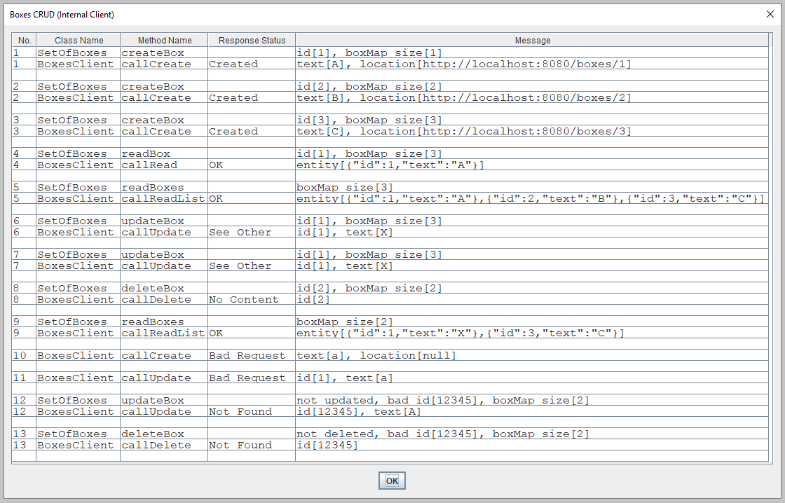
4.3. RESTful Example "Boxes CRUD (External Client)"Action:
1. Push the button "Boxes CRUD (External Client)".
 The main application pauses and the HTTP server starts listening for HTTP requests.
The main application pauses and the HTTP server starts listening for HTTP requests.
2. Start batch file
'02 CURL call server.bat'.
 This script uses 'curl' for sending HTTP requests: POST, GET, PUT, and DELETE.
This script uses 'curl' for sending HTTP requests: POST, GET, PUT, and DELETE.
3. After finishing the execution of the batch file press the 'Enter' button in the main window to shut down the server.
 The main application resumes running and shows the results in the "Boxes CRUD (External Client)" window.
The main application resumes running and shows the results in the "Boxes CRUD (External Client)" window.
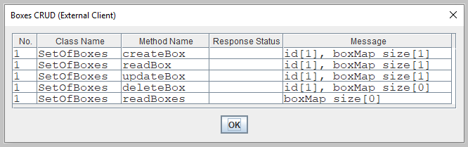